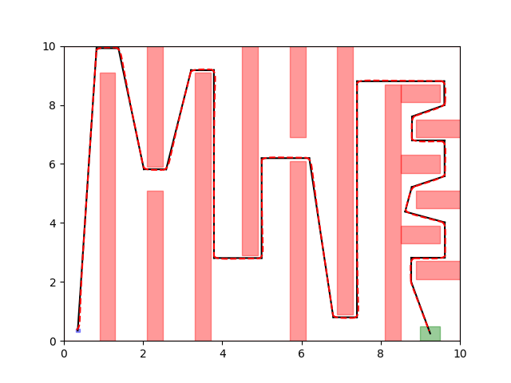

Abstract:
FACTEST is tool for synthesizing controllers for nonlinear systems with reach-avoid requirements.
The controllers found by FACTEST consists of a reference trajectory and a tracking controller which drives the actual trajectory to follow the reference trajectory.
In our papers, we identify a type of reference trajectory such that the tracking error between the actual trajectory of the closed-loop system and the reference trajectory can be bounded and pre-computed.
Moreover, such a bound on the tracking error is independent of the reference trajectory.
Using such bounds on the tracking error, we propose a method that can find a reference trajectory by solving a satisfiability problem over linear constraints.
Our overall algorithm guarantees that the resulting controller can make sure every trajectory from the initial set of the system satisfies the given reach-avoid requirement.
Example reference and actual trajectories using controllers found by FACTEST
FACTEST can find controllers different vehicle models (3-6 dimensional state space and 2-4 dimensional input space), including ground, aerial, and underwater vehicles, across eight scenarios (with up to 22 obstacles), all with running time at the sub-second range.

Example solution to zigzag1

Example solution to zigzag2

Example solution to zigzag3

Example solution to maze

Example solution to barrier

Example solution to SCOTS scenario

Example solution to the L-tunnel

Example solution to the z-tunnel
| Model |
Env |
Initial Set Size |
# Obstacles |
Time |
# Partitions |
| car |
zigzag1 |
0.200 |
9 |
0.028 |
1 |
| car |
zigzag2 |
0.400 |
9 |
0.144 |
4 |
| car |
zigzag3 |
0.600 |
9 |
0.605 |
16 |
| car |
maze |
0.200 |
22 |
0.078 |
1 |
| car |
barrier |
0.707 |
6 |
0.415 |
22 |
| car |
SCOTS |
0.070 |
19 |
0.667 |
1 |
| robot |
zigzag1 |
0.200 |
9 |
0.025 |
1 |
| robot |
zigzag2 |
0.400 |
9 |
0.196 |
4 |
| robot |
zigzag3 |
0.600 |
9 |
0.612 |
16 |
| robot |
maze |
0.200 |
22 |
0.079 |
1 |
| robot |
barrier |
0.707 |
6 |
0.498 |
22 |
| robot |
SCOTS |
0.070 |
19 |
0.635 |
1 |
| auv |
ztunnel |
0.866 |
6 |
0.372 |
1 |
| auv |
ltunnel |
0.866 |
8 |
0.317 |
1 |
| hovercraft |
ztunnel |
0.866 |
6 |
0.472 |
1 |
| hovercraft |
ltunnel |
0.866 |
8 |
0.140 |
1 |
RRT vs. SAT-plan time comparison
Reference trajectory found by FACEST vs. RRT
To demonstrate the speed of our SMT-based reference trajectory planner, we compare it with
Rapidly-exploring Random Trees (RRT). The running time, number of line segments, and number of iterations needed to find a path were compared. RRT was run using the Python Robotics library, which is not necessarily an optimized implementation. SAT-Plan was run using Yices SMT Solver
Each planner was run 100 times. The colored bars represent the average runtime and average number of iterations. The error bars represent the range of minimum and maximum. RRT timed out for the SCOTS scenario, unable to find a trajectory within 5000 iterations. The maze scenario timed out about 10% of the time.
Overall SAT-Plan scales in time much better as the size of the unsafe set increases. Additionally, the maximum number of iterations that RRT had to perform was far greater than the average number of line segments needed to find a safe path.